← 返回阅读库 · 原论文目录
论文讲解阅读文档 · 机器人学 · v094
Robot Manipulation in a Language Model Era
视频时长 00:12:02；讲解文字 5,292 字符；提取讲解画面 71 张。按视频原顺序阅读，每段文字保留时间戳。
文字来自整段视频的自动语音转写，按自然停顿分段，并与 PPT / 论文页面 / 演示画面对齐。未将讲解压缩为摘要；术语、数字和口述公式请结合画面及原论文核对。 阅读稿已校正规范部分明确术语误识别；原始逐字稿和每处修改记录另行保留。
讲解画面为源视频截图（640×360），不是可编辑 PPT 文件。全片按每秒 2 帧扫描内容变化，逐步展开页保留；连续动画保留代表画面。清晰度受源视频限制。
下载完整资料包 · 含离线 HTML、PDF、Word、全部 PPT 画面和字幕。
原论文与材料
Socratic Models: Composing Zero-Shot Multimodal Reasoning with Language · 下载完整 PDF（30 页）
Manipulate-Anything: Automating Real-World Robots using Vision-Language Models · 下载完整 PDF（14 页）
RoboPoint: A Vision-Language Model for Spatial Affordance Prediction for Robotics · 下载完整 PDF（15 页）
Foundation Models in Robotics: Applications, Challenges, and the Future · 下载完整 PDF（33 页）
SpatialVLM: Endowing Vision-Language Models with Spatial Reasoning Capabilities · 下载完整 PDF（29 页）
Code as Policies: Language Model Programs for Embodied Control · 下载完整 PDF（16 页）
TinyVLA: Towards Fast, Data-Efficient Vision-Language-Action Models for Robotic Manipulation · 下载完整 PDF（8 页）
OpenVLA: An Open-Source Vision-Language-Action Model · 下载完整 PDF（37 页）
PaLM-E: An Embodied Multimodal Language Model · 下载完整 PDF（18 页）
Diffusion-VLA: Generalizable and Interpretable Robot Foundation Model via Self-Generated Reasoning · 下载完整 PDF（17 页）
Robotic Control via Embodied Chain-of-Thought Reasoning · 下载完整 PDF（24 页）
RT-1: Robotics Transformer for Real-World Control at Scale · 下载完整 PDF（31 页）
LLaRA: Supercharging Robot Learning Data for Vision-Language Policy · 下载完整 PDF（47 页）
ReKep: Spatio-Temporal Reasoning of Relational Keypoint Constraints for Robotic Manipulation · 下载完整 PDF（30 页）
PIVOT: Iterative Visual Prompting Elicits Actionable Knowledge for VLMs · 下载完整 PDF（27 页）
LLARVA: Vision-Action Instruction Tuning Enhances Robot Learning · 下载完整 PDF（21 页）
TraceVLA: Visual Trace Prompting Enhances Spatial-Temporal Awareness for Generalist Robotic Policies · 下载完整 PDF（21 页）
RT-2: Vision-Language-Action Models Transfer Web Knowledge to Robotic Control · 下载完整 PDF（26 页）
Do As I Can, Not As I Say: Grounding Language in Robotic Affordances · 下载完整 PDF（34 页）
按时间阅读
00:00:00–00:00:16 · 画面 001
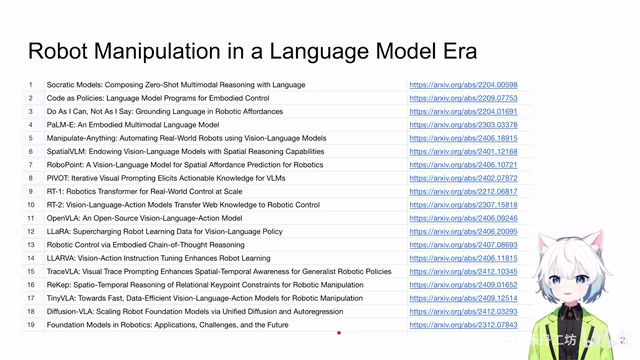
00:00:00–00:00:16 · 画面 001大家好，今天我们来快速水上 16 篇论文。这些论文就像你在标题中看到的，就是我们现在来到了一个大语言模型的时代。那么这些大语言模型怎么样能够帮助我们更好的去解决机器人的这些桌面操作这样的问题？那么这 16 篇论文就是多少跟这个问题沾点关系的。我们这个视频也就是对他们做一个简单的整理。
00:00:16–00:00:17 · 画面 002
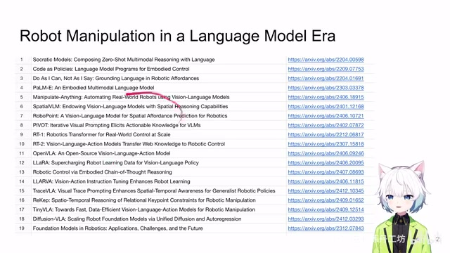
00:00:16–00:00:17 · 画面 00200:00:17–00:00:23 · 画面 003
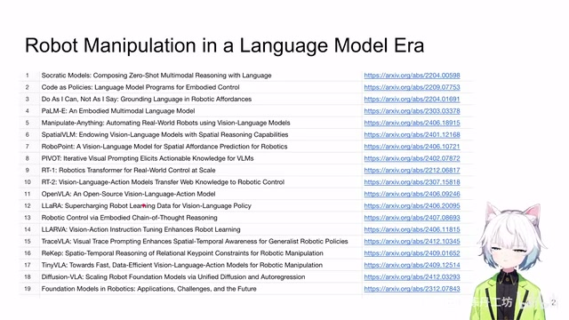
00:00:17–00:00:23 · 画面 00300:00:23–00:01:08 · 画面 004
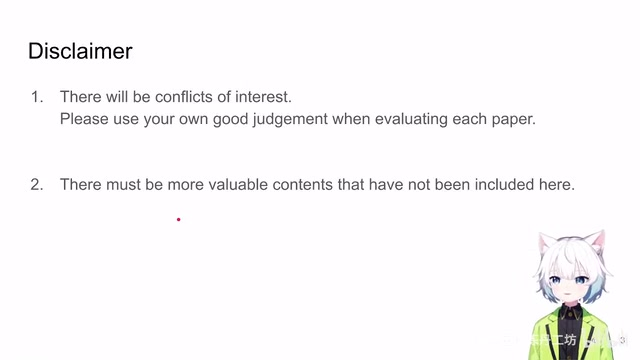
00:00:23–00:01:08 · 画面 004那么当然在视频正式开始之前，我还是要做以下两个声明。第一个就是我本人也是从事相关研究。所以你肯定能够看到有利益的冲突。你可能看到我会更加偏好某些文章。更加讨厌某些文章的作者。这都是很正常的那作为一个读者来说，你要保持自己的判断。那么我在做这期视频的时候，会尽量保持作者的意思。同时也会有我自己的观点。向着我的一位前辈所说的 high level。
来不懈努力这是第一点那么第二点呢还是我最近读文章实在是太少了。肯定有遗漏的或者说还有更多有价值的文章。没有被发掘没有被收录到这个列表里面来。如果有这方面有相关的文章，欢迎大家推荐在评论区里面留言。那么在我们这个视频里面呢，
00:01:08–00:01:41 · 画面 005
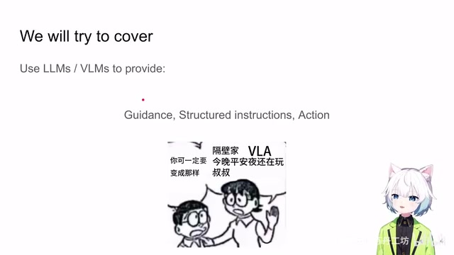
00:01:08–00:01:41 · 画面 005我们会尝试按照这三个主题，去组织我们的这些相关的论文。就是使用 language model或者 vision language model去生成对机器人控制的，一些 general guidance就是一些相对模糊一点的，这样的一个指引或者说 language model 作为一个辅助，作为一个参照那再进一步呢就是 structured instruction就是我希望我的 language model通过一个中间的介质也好，我们叫它 interface 也好这些东西 instruction
去指挥我们底层的策略，帮我们完成一些事情。那么再往下推进一步，就是使用 language model
00:01:41–00:01:42 · 画面 006
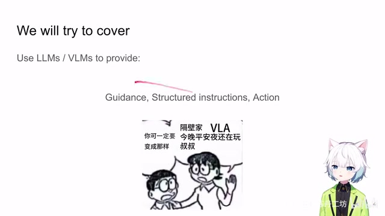
00:01:41–00:01:42 · 画面 006或者 vision language model
00:01:42–00:01:53 · 画面 007
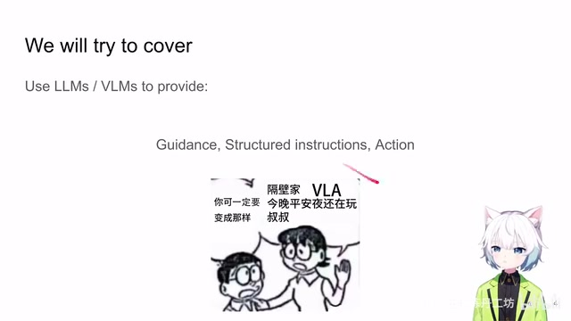
00:01:42–00:01:53 · 画面 007直接通过这个观测的视觉，它的收到的用户的指令，来产生能够控制我们机器人的，这些底层的指令这又是一个系列的文章。
00:01:53–00:01:54 · 画面 008
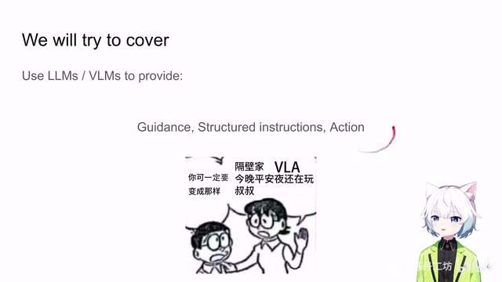
00:01:53–00:01:54 · 画面 008当然这三个系列
00:01:54–00:02:11 · 画面 009
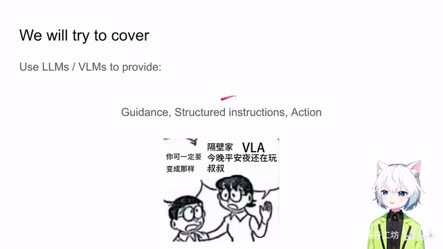
00:01:54–00:02:11 · 画面 009那么当然这三个主题没有说谁优谁劣，没有说谁是谁的递进的关系，而且有些文章你没法严格的去划分它，这里只是一个辅助性的概念上的东西来帮助我们把这些文章串联起来，大家注意这一点。那么当然在这个视频里面我们不会是涉及比如说像导航这样的问题，还有这些使用自然语言去整理去归纳去形成记忆
00:02:11–00:02:27 · 画面 010
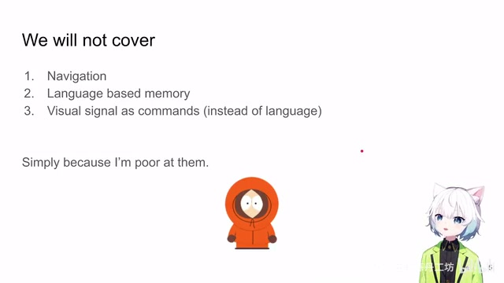
00:02:11–00:02:27 · 画面 010或者是在地图上标点这样的东西，还有一类是使用的视觉的信号而不是像语言这种性质的信号来去作为机器人控制的这些方向的，当然这些都是有趣的方向，只是因为我自己太菜了完全不懂，所以我们也不会设计那么下面我们就可以开始了。那么首先我们就从 guidance 讲起
00:02:27–00:02:28 · 画面 011
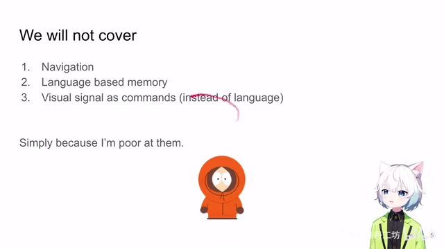
00:02:27–00:02:28 · 画面 01100:02:28–00:02:39 · 画面 012
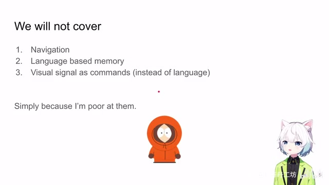
00:02:28–00:02:39 · 画面 01200:02:39–00:02:57 · 画面 013
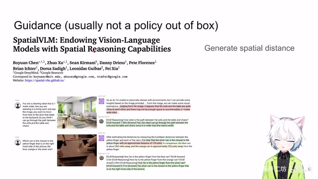
00:02:39–00:02:57 · 画面 013那么这一系列工作的核心的思路就是我的 language model 就像一个助理一样，你在搬家的时候指挥机器人对吧？你把这个衣柜放在哪里，你把这个画挂的正不正等等这样的问题。像比如说这一片 SpatialVLM，它就是说我训练我的 vision language model 提供一些关于空间上的信息对吧？什么机箱阵地项目所移动 5 米这样的信息来让我们的机器人能够去完成相应的任务。
00:02:57–00:03:00 · 画面 014
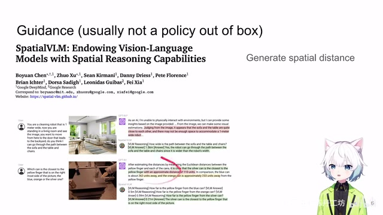
00:02:57–00:03:00 · 画面 01400:03:00–00:03:23 · 画面 015
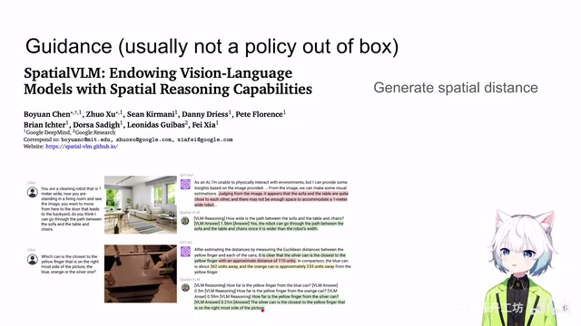
00:03:00–00:03:23 · 画面 015那么当然这类工作的特性就是这个 language model 本身它不是一个 policy，你需要学，无论是你用 behavior cloning 或者是 reinforcement learning 也好，你需要去下游学这样的一个东西来去消化这些语言来让他们去指导你的动作。这个是脉络里面比较有代表性的工作。那么再往下还有这一篇，这里你就把图上标好点。
00:03:23–00:03:24 · 画面 016
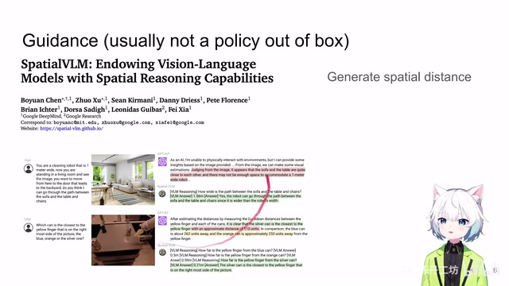
00:03:23–00:03:24 · 画面 01600:03:24–00:03:26 · 画面 017
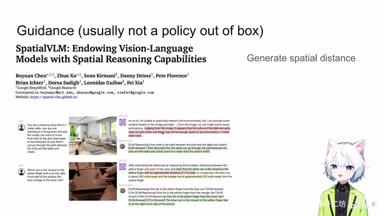
00:03:24–00:03:26 · 画面 01700:03:26–00:04:20 · 画面 018
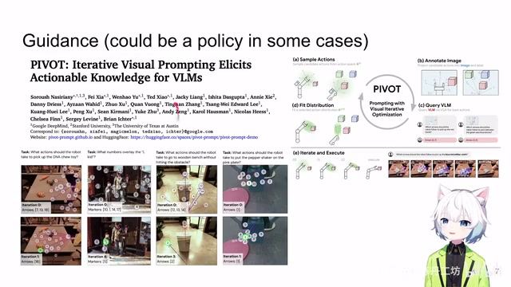
00:03:26–00:04:20 · 画面 018对吧，我问 languagemodel 我是走这步好，走这步好还是走这步好对吧，你看到这里图的标一个个点，让你 languagemodel 呢从这里面选出一个合适的点，选出来之后呢你就走到那或者是把你的机械币放到那里，那么这是一个很直接的通过视觉 prompt 的方法跟 language model 交互来把其中的知识拿出来的这样一个过程，当然这个过程也肯定不是一帆风顺的对吧，它的 language model 生成的东西它也是很 noisy 的，所以作者提出的是一个不断的反复，从一开始我实在是不知道我该去做什么，我该从哪里开始，它就是一个高色分布，你开始这个 language model 给你指个方向，指个方向你就在这个方向再去跟它详细的去问，把你的高色分布改一改
改成这样然后详细的去用 language model我下一步该在新的范围里面怎么做对吧这样最终一步一步的把范围逐渐的缩小
00:04:20–00:04:23 · 画面 019
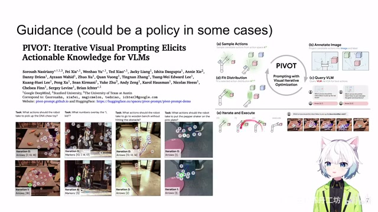
00:04:20–00:04:23 · 画面 019就最终形成一个好的轨迹那么当然最近还有工作像 manipulate anything
00:04:23–00:04:38 · 画面 020
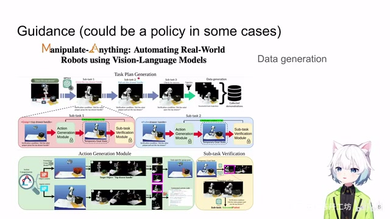
00:04:23–00:04:38 · 画面 020它会让 language model 把复杂的指令拆成一个个指令然后在每个详细的任务里面通过让 language model 去生成代码驱动机器人达到相应的一个 pose到了之后我再用 language model 去看一眼
00:04:38–00:04:39 · 画面 021
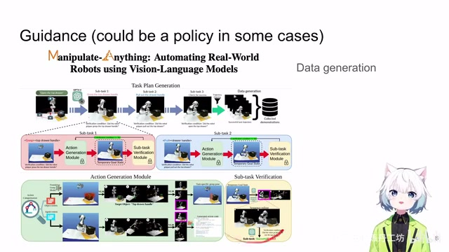
00:04:38–00:04:39 · 画面 02100:04:39–00:04:43 · 画面 022
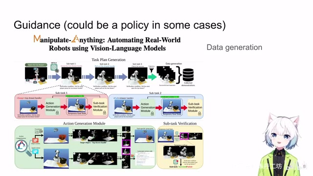
00:04:39–00:04:43 · 画面 022我这一步是不是完成了就可以一个的把这些小的任务完成最终收集到你想要的数据
00:04:43–00:04:45 · 画面 023
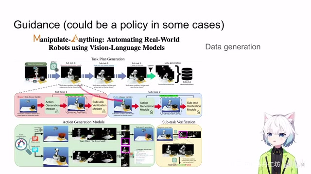
00:04:43–00:04:45 · 画面 02300:04:45–00:04:49 · 画面 024
00:04:45–00:04:49 · 画面 024那么当然这一篇设计的技巧还是比较多的你严格来说也不能放在这一类
00:04:49–00:05:27 · 画面 025
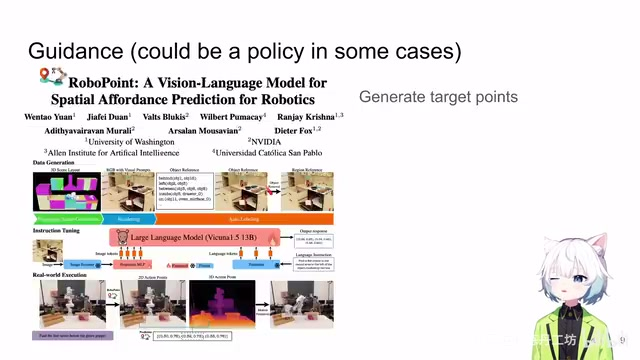
00:04:49–00:05:27 · 画面 025再有就是 RoboPoint它其实就更直接了就是我训练一个 language model它跟 LLaVA 结构差不多的。只不过它的输出就是一系列的点的坐标就图像中的坐标这些坐标就是我们想要操作要所指定的物体的周围它其实本质上做的是一个 VDRAW 管理所以这个工作它也不是一个 policy它也不能直接用来驱动我们的机器人只不过在某些情况下比如说像这种它的场景就是 RGBD 相机一个图像中的坐标就能够对应到三维空间中的一个点然后它再让机器人到那里去拿这个东西其实它更像是一篇视觉上的文章。
00:05:27–00:05:42 · 画面 026
00:05:27–00:05:42 · 画面 026那么再往下还有这一篇。它的思路也是相似的。也是生成图像中的坐标点。只不过它是生成了一块关键点的轨迹。而且用的是一个相对坐标的形式。就是这个点在这个点的相对多少的距离。这样子一复制一块轨迹然后把这些轨迹交给一个状态优化器去做。
00:05:42–00:05:43 · 画面 027
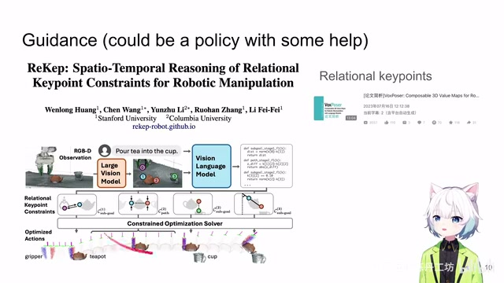
00:05:42–00:05:43 · 画面 02700:05:43–00:05:53 · 画面 028
00:05:43–00:05:53 · 画面 028就像你做路径规划一样。你指定了说这个机器人一定要经过哪些点。剩下你就让这个规划器自己脑补去。对吧？这是这一篇的一个思路。那么再往下我们就可以看一些让 language model 直接去生成指令然后去控制我们机器人的这样的工作。最开始就是最早的我们之前也介绍过苏格拉底模型，它其中有一部分的实验就是让 language model 去生成 Python 语句直接去驱动机器人。你看虽然它的指令都是 Pick and Place，但是 language model 承担了理解你的具体的自然语言的指令。
00:05:53–00:06:21 · 画面 029
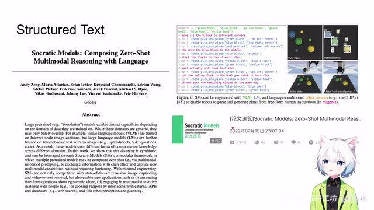
00:05:53–00:06:21 · 画面 029这个大头最困难的任务，这是很经典的一个工作，我们之前也视频也介绍过了。那与他同期的还是这样一堆人对吧？搞的 Code as Policies 也是直接让 language model 就写代码了，把你想要的事情翻译成机械的代码一串串执行出来。那么他呢其实就是你说现在讲的这个所谓的 agent。
00:06:21–00:06:23 · 画面 030
00:06:21–00:06:23 · 画面 03000:06:23–00:06:24 · 画面 031
00:06:23–00:06:24 · 画面 03100:06:24–00:06:43 · 画面 032
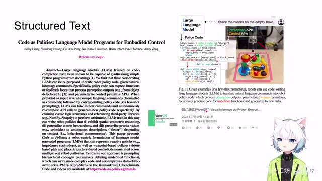
00:06:24–00:06:43 · 画面 032这些东西跟像 webgpt 这些东西其实原理上是相似的。那么再往下这个就相对更加难界定一点，也是很有名的 c 看你用户给 languagemodel 一个指令，languagemodel 想一想我能做这些事情，同时我 robot 它也有自己的局限，它清楚在当前环境中我能做什么样的任务，这两个一结合对吧？我们最终
00:06:43–00:06:48 · 画面 033
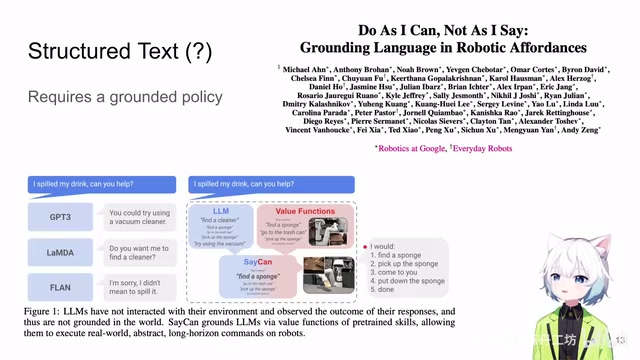
00:06:43–00:06:48 · 画面 03300:06:48–00:06:49 · 画面 034
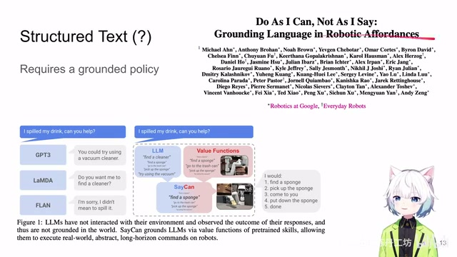
00:06:48–00:06:49 · 画面 03400:06:49–00:07:02 · 画面 035
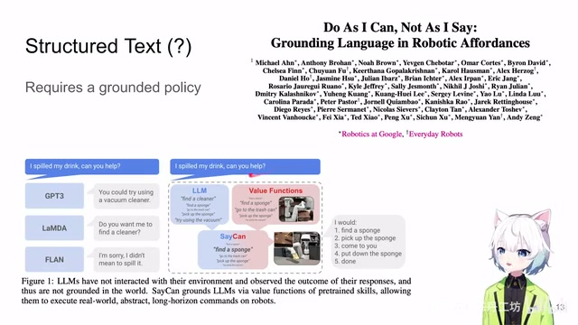
00:06:49–00:07:02 · 画面 035能够干的事情。那么再往后呢就是这个碰一更进一步啊，我是使用一个微神来 model 去消化我当前的这个图像去消化我当前的这个文字的指令然后呢去生成我该干什么事情。
00:07:02–00:07:30 · 画面 036
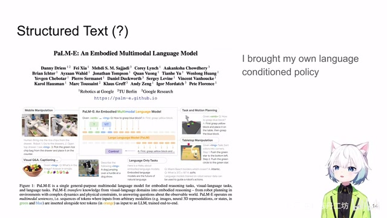
00:07:02–00:07:30 · 画面 036只不过这样的一个文本的指令呢，你还是不能把它拿过来直接用，你是要把它交给这个底层的控制器，它是一个 language condition 这样一个控制器，它可能是 reinforcement learning 学来的，它可能是 behavior learning 学来的，这都不重要对吧？交给这种底层的控制器去做。那还是在这里，language model 呢担任了一个 high level 的 planning 的这样一个作用。那么再往下这一个系列呢，就完全是把这个 vision language model 这些高级的 transformer 当成一个 policy 来看了。
00:07:30–00:07:31 · 画面 037
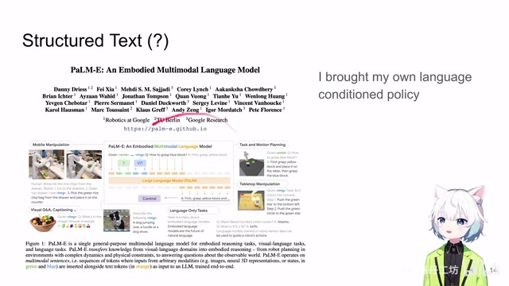
00:07:30–00:07:31 · 画面 03700:07:31–00:07:35 · 画面 038
00:07:31–00:07:35 · 画面 03800:07:35–00:08:02 · 画面 039
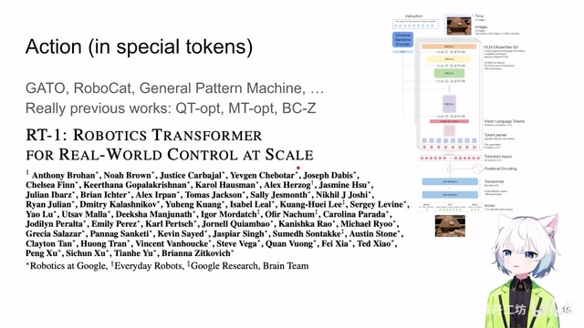
00:07:35–00:08:02 · 画面 039就完全没把它们当一个语言模型来做了，还有它们在很多模型设计上的一些积累，像 QT-Opt,MT-Opt,BC-Z，搞出来 Robotics Transformer 1RT1，它还是一个相对经典的，你叫它 decision transformer 也好，反正就是一个 transformer 去生成一系列的动作的指令，这还是一个相对比较经典的套路，但是到后面 RT2 对吧，它就是一个完全的从 vision language model
00:08:02–00:08:03 · 画面 040
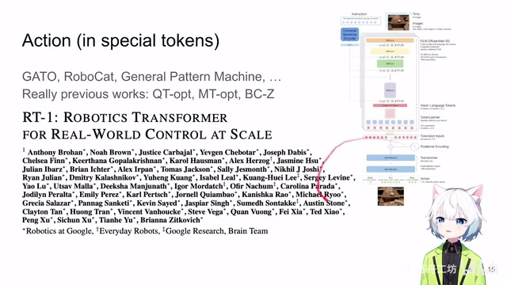
00:08:02–00:08:03 · 画面 04000:08:03–00:08:05 · 画面 041
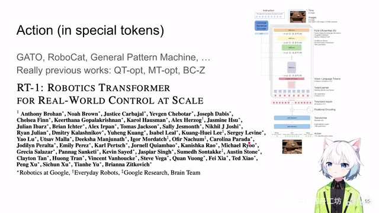
00:08:03–00:08:05 · 画面 04100:08:05–00:08:10 · 画面 042
00:08:05–00:08:10 · 画面 042开始初始化，然后呢用这些现实中的 vqa 的数据，你机器人的控制的数据来去直接让这个 v3 model 去生成机器的控制指令。那么你这机器的控制指令呢，这些 token 可能就是你这个词标里面用的比较少的这些 token 就用他们指代某个特定的伏点数对吧？就把这个控制来做了。那当然这个设计也是很经典的设计了。
00:08:10–00:08:11 · 画面 043
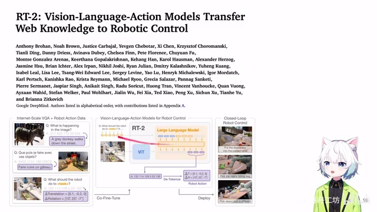
00:08:10–00:08:11 · 画面 04300:08:11–00:08:14 · 画面 044
00:08:11–00:08:14 · 画面 04400:08:14–00:08:16 · 画面 045
00:08:14–00:08:16 · 画面 04500:08:16–00:08:36 · 画面 046
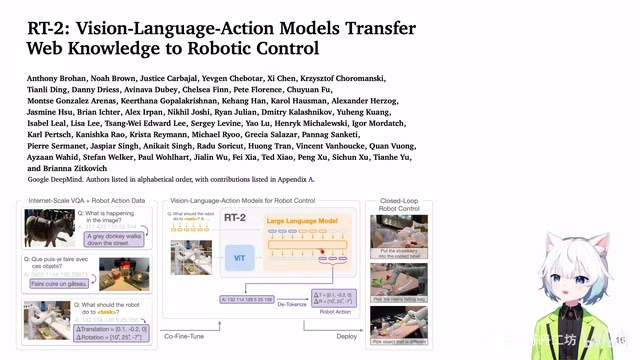
00:08:16–00:08:36 · 画面 046只不过 RT2 告诉我们力大砖飞，我们是可以训练这样一个模型去尝试你和这种看起来毫无意义的数据的。这是 RT2，再后来就是 OpenVLA 出来了，他告诉你不仅 Google 可以，你也可以做，这里面有 SigLIP 有 DINO，我们这个视频里面也稍微。
00:08:36–00:08:37 · 画面 047
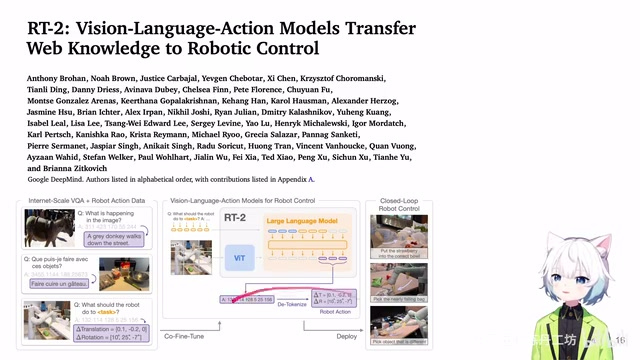
00:08:36–00:08:37 · 画面 04700:08:37–00:08:41 · 画面 048
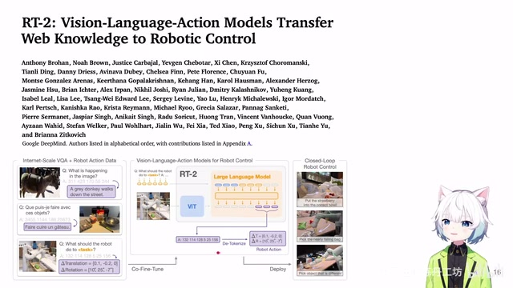
00:08:37–00:08:41 · 画面 04800:08:41–00:08:49 · 画面 049
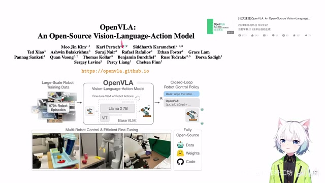
00:08:41–00:08:49 · 画面 04900:08:49–00:08:51 · 画面 050
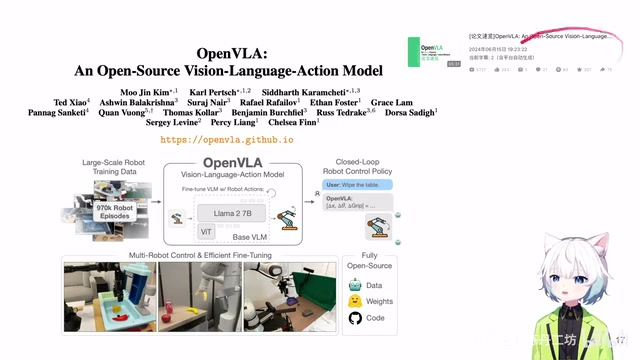
00:08:49–00:08:51 · 画面 050讨论了一下，它本质上还是 rt2 一样的东西。这些呢，一系列的文章呢都是很标准的让这个 vision language model 去生成特殊的控制指令来控制其人的这样的一个设计。那么再往下呢，就开始往上加东西了对吧？比如说像这一篇，他加了一点辅助的数据，那就是这个 virtual trace，他希望模型不仅要生成我下一步的控制的指令，同时呢要生成一个 2d 的。
00:08:51–00:09:04 · 画面 051
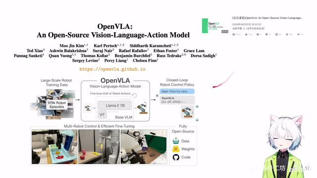
00:08:51–00:09:04 · 画面 05100:09:04–00:09:37 · 画面 052
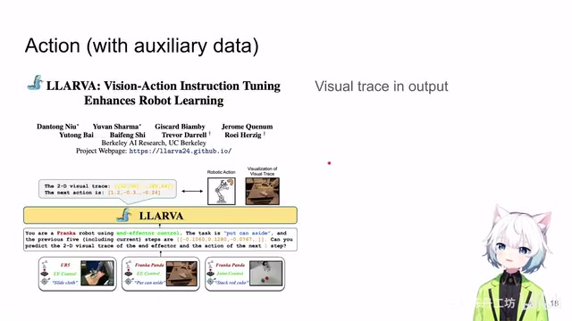
00:09:04–00:09:37 · 画面 052视觉的轨迹。视觉的轨迹就是用一系列的点来表示，这其实就是一个相当于辅助的信息来帮助我们 Language Model 让决策生成的时候考虑到视觉的信息。这其实就是在 RT2 上一个很直接的拓展，就是把 Visual Trace 放在了输出里面，相应肯定也有把 Visual Trace 放在输入里面对吧？最近出的 Trace VLA 它就是
00:09:37–00:09:58 · 画面 053
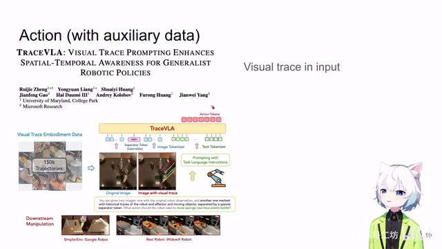
00:09:37–00:09:58 · 画面 053你跟 rt2 一样，但是呢提供两张图，一张图呢是原始的 observation，另一张图呢是你过去的运动的轨迹啊，你是个 visual trace 叠在这个图上面，把两个图一起送到这个 visual language model 里面，让让他呢去生成控制的指令。那再往下呢还有这个 ecot 啊，就是你看 rt2 他是直接的输入图像到指令，那我为什么不用一个这个 Chain of Thought 的方法对吧？我先让他去想想这个图里面都有啥。
00:09:58–00:10:28 · 画面 054
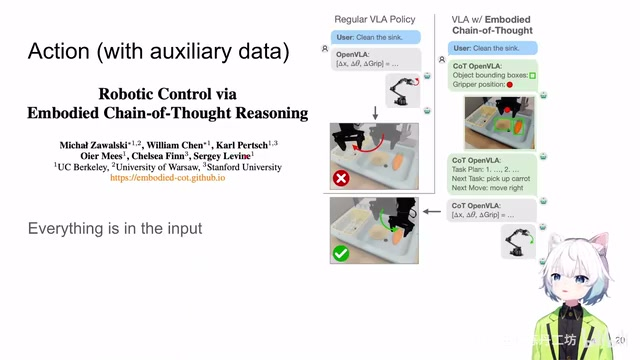
00:09:58–00:10:28 · 画面 054然后我为了完成这个任务，我需要干啥，最后再把指令输出出来，那相当于提供更加详细的线索来帮助我们生成这样的 action，只不过你的推理的时候的代价就变得很大了，你看你要有这么多一块的新的 token 要不断的去生成这是 ecot。那么当然还有就是把所有的东西都放到训练集里面，希望你的 language model 自己能学会的这个 LLaRA，就是你在你的训练任务里面加入一些根据你现在 behavior cloning 数据来生成的，比如说图像中的物体在哪还有 action prediction future prediction，就是你做了这样的 action 之后会有什么样的未来或者是两个图像之间它们可能发生了什么样的 action 能够把这两个状态连接起来。那么这篇文章我们也是出了一个视频详细讲了。
00:10:28–00:10:29 · 画面 055
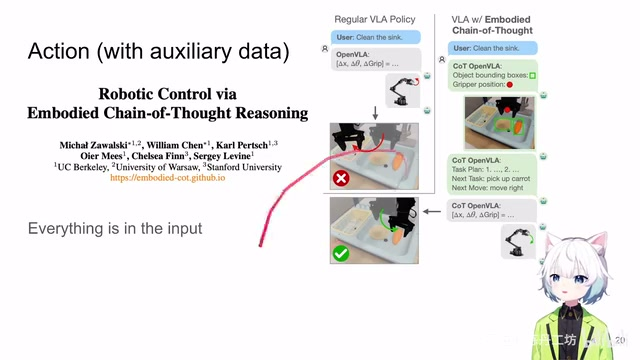
00:10:28–00:10:29 · 画面 05500:10:29–00:10:30 · 画面 056
00:10:29–00:10:30 · 画面 05600:10:30–00:10:34 · 画面 057
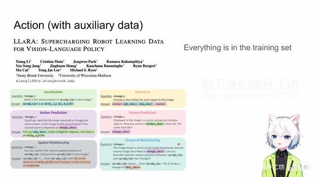
00:10:30–00:10:34 · 画面 05700:10:34–00:10:35 · 画面 058
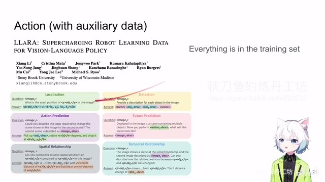
00:10:34–00:10:35 · 画面 05800:10:35–00:11:00 · 画面 059
00:10:35–00:11:00 · 画面 059当然这些数据只是训练的时候用的，你实际推理的时候就直接的去问你 language model，我当前这个图片看到的是啥，你 language model 就告诉你你该从哪抓放到哪里
00:11:00–00:11:03 · 画面 060
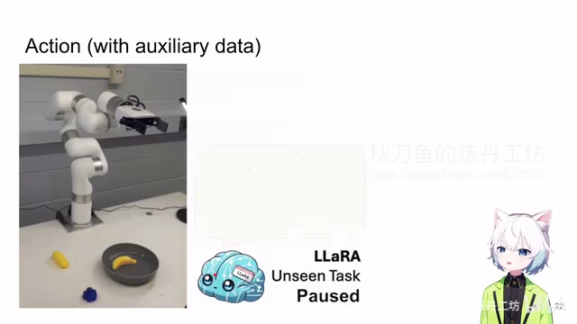
00:11:00–00:11:03 · 画面 06000:11:03–00:11:06 · 画面 061
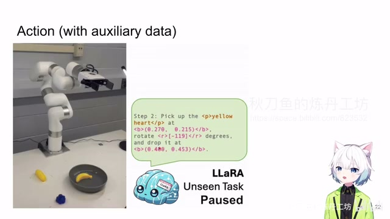
00:11:03–00:11:06 · 画面 06100:11:06–00:11:10 · 画面 062
00:11:06–00:11:10 · 画面 062我个人的观点是你虽然不要看这篇文章最终做下来的都是一些二维的任务但是你这个思路是完全可以用到三维扩展里面这是这一篇那么当然最后还剩下三篇对吧是关于其他的有一些朋友们感兴趣比如说像用 Vision Language Model 作为一个 Encoder 去提 Representation 来帮助我们的一个 Diffusion Policy 能够更好的执行任务讲 Tiny VLA Diffusion VLA 只不过这些任务就单纯的把 Vision Language Model 作为了一个 Encoder
00:11:10–00:11:12 · 画面 063
00:11:10–00:11:12 · 画面 06300:11:12–00:11:16 · 画面 064
00:11:12–00:11:16 · 画面 06400:11:16–00:11:20 · 画面 065
00:11:16–00:11:20 · 画面 06500:11:20–00:11:32 · 画面 066
00:11:20–00:11:32 · 画面 06600:11:32–00:11:34 · 画面 067
00:11:32–00:11:34 · 画面 06700:11:34–00:11:41 · 画面 068
00:11:34–00:11:41 · 画面 068去提信息了，不太用到 planning reasoning 这样的功能，这是这一系列，那么当然这里还有一篇 survey，相对时间比较早了，感兴趣的朋友也可以读一读，好的，那么以上就是我对这一个方向的一个非常大致的一个梳理，还是就像我们视频开头所说的，我对这个领域的了解是有限的，而且是有偏见的，所以你一定要保有自己的判断，那么感谢您的收看，请多多指点
00:11:41–00:11:42 · 画面 069
00:11:41–00:11:42 · 画面 06900:11:42–00:12:02 · 画面 070
00:11:42–00:12:02 · 画面 07000:12:02–00:12:02 · 画面 071
00:12:02–00:12:02 · 画面 071转写与来源说明 · 5 个自动复核提示
保留 124 个原始语音片段，5 个片段触发自动复核提示。提示仅用于定位可能的术语、重复或识别问题，不等于已确认错误。
讲解画面为源视频截图（640×360），不是可编辑 PPT 文件。全片按每秒 2 帧扫描内容变化，逐步展开页保留；连续动画保留代表画面。清晰度受源视频限制。
原视频：paper/合集_2026-10-16_机器人学/[论文夕拾]Robot Manipulation in a Language Model Era.mp4
SHA-256：b044923b8bea6b724d4d6bbf22ecc31ba86d3802174733ff3b3dab0f4c2e9837
或者 vision language model
一些 general guidance
就是 structured instruction
或者 vision language model
视觉的轨迹。视觉的轨迹就是用一系列的点来表示，这其实就是一个相当于辅助的信息来帮助我们 Language Model 让决策生成的时候考虑到视觉的信息。这其实就是在 RT2 上一个很直接的拓展，就是把 Visual Trace 放在了输出里面，相应肯定也有把 Visual Trace 放在输入里面对吧？最近出的 Trace VLA 它就是
全文按视频语音与画面制作。原论文可从上方链接下载；完整资料包保留全文、原始逐字稿、字幕和校对记录。